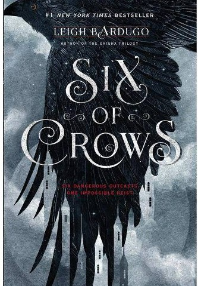

|  | |
This is a Young-Adult fantasy series. It is paperback and in good condition. No damage beside shelf wear."Ketterdam: a bustling hub of international trade where anything can be had for the right price—and no one knows that better than criminal prodigy Kaz Brekker. Kaz is offered a chance at a deadly heist that could make him rich beyond his wildest dreams. But he can’t pull it off alone. . . .
A convict with a thirst for revenge |
|